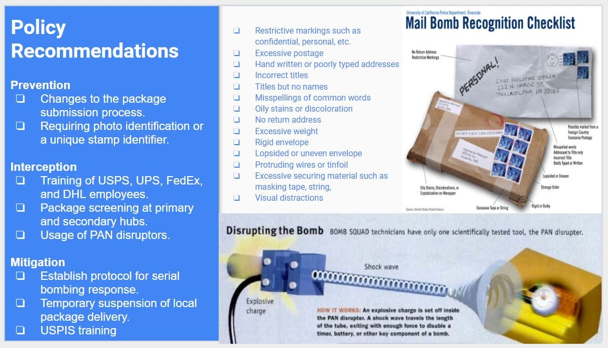

In the past few hours, US Secret Service and law enforcement intercepted a series of explosive devices intended for delivery to a number of high profile political targets. On Monday, an explosive device was found in the mailbox of George Soros's home in Katonah, NY. Since then, packages potentially containing explosives have been addressed or delivered to former Secretary of State Hillary Clinton, former President Barack Obama, former Attorney General Eric Holder, Rep. Maxine Waters, and Rep. Debbie Wasserman Schultz. Another device, addressed to Former CIA Director John Brennan, was sent to CNN in New York.
Reflecting back to the Anthrax attacks of the early 2000's, it is not uncommon to see this form of terrorism manifest during times of politcal divisiveness. This may be the first time multiple high profile individuals were targeted in a parcel bomb plot, but we have seen the mail system weaponized on many occasions in the past.
On March 26th, 2018, a number of parcels with mock explosives were mailed to several government and military sites in the Washington D.C. metro Area. The parcels were sent by 43-year-old Seattle resident, Thanh Cong Phan who had been in frequent contact with the FBI for letters he mailed to other government agencies in the past. The parcels tested positive for black powder, a substance found in explosive devices, and an X-ray scan appeared to show a GPS locator and fuse attachment. This incident was quickly overshadowed by a series of bombings in the Austin Metropolitan Area earlier the same month.
The Austin bombings were clustered around the greater metropolitan area with the exception of one which took place at a FedEx distribution center in Schertz, Texas.
In all three of these initial attacks, the devices detonated shortly after being handled by the victims. This could suggest a sophisticated trigger mechanism, rather than a simple timer, or manual detonator.
The suspect was identified as 23-year-old Mark Anthony Conditt of Pflugerville, Texas. Who upon being pursued by law enforcement drove his vehicle into a ditch before manually detonating another device. Conditt had previous engineering and precision manufacturing experience.
In 2007, an individual known as "The Bishop" mailed pipe bombs to various Chicago financial institutions after demanding they raise stock prices to $6.66. The packages were not rigged to explode but were intended as warnings as they had lacked detonating devices. The suspect, John Patrick Tompkins, a machinist from Dubuque, Iowa was arrested and sentenced to 37 years in prison.
In 1989, Federal appeals judge Robert Vance and Civil Rights Lawyer Robert Robinson were killed by parcel bombs sent through the mail by Walter Leroy Moody, Jr.
A third bomb was sent to an Atlanta courthouse, and a fourth was sent to an office of the NAACP in Jacksonville. It is speculated that Moody sought revenge for a prior court proceeding in which Judge Vance presided over and that moody held racist beliefs.
Undoubtedly, the most iconic of these cases is a series of package bombs sent between 1978 and 1995 killing three and injuring dozens others.
His thesis, The Industrial Society and its Future outlined his grievances with modern society, was published in 1995 leading the FBI to arrest one Theodore John Kaczynski in 1996.
Though Kaczynski was not the first to use the mail to distribute explosive devices, he has popularized the endeavor and inspired many copycat events. There have been many other bombings carried out through the use of mail and parcel services. In early years, letter bombs were used in Israeli assassination attempts. Some even reached the white house during the Truman presidency from the Infamous Stern Gang. Since the inception of the Postal service in 1772, there have been countless attempts to weaponize the mail.
Though these mentioned attacks appear to be similar, there are stark differences. Like conventional crimes, most of them are classified by the intent however layered or nuanced. Packages rigged to explode with the intent to kill or severely injure are usually done so out of hatred, revenge, or racism. The motivations of bombs may be purely religious, ideological, or political. They could be used to intimate, threaten, extort, coerce, or send a message. Still, others send bombs for fame, notoriety or to express a sheer disgust for society as a method of social disruption or as propaganda of the deed. In other words, they intend to be a catalyst for a revolution.
It is essential to understand that the motivations for this form of attack are usually compounded.
For example, social disruption was one of the primary motivations of John Allen Muhammad, the man responsible for the DC Sniper Attacks of 2002. He wanted to disrupt society, but he also wanted to murder his ex-wife to regain custody of his children. The Unabomber also wished to disrupt society, but he primarily wanted to gain fame and notoriety. His self-elevation gave him a platform to release his thesis. Tranh Cong Phan wanted his message heard, but he did not intend to harm anyone as his package bombs were not rigged to explode. Understanding the nuances of these similar but very different events will be an important tool for investigators when encountering this threat in the future.
All of these incidents, regardless of individual motivation, are violent or contain the threat of violence in an extremist convention which effectively classifies each event as terrorism.
Certainly there were other methods to carry out the intentions of these attacks. However, because the individual chose explosive devices disguised as inauspicious, mundane vehicles; they have successfully weaponized fear. Something as inauspicious as a package in the mail can be weaponized to kill or severely injure. A deadly item can appear on a doorstep or front porch. It sends the message that no one is safe and that control over societal norms has been lost. Whether the attacks are targeted, sequenced, or random, the communities struggle to cope with the reality that they may be seriously injured or killed while opening the mail.
While parcel bombs are rare, these occurrences can have devastating effects. There are generally safeguards in place to prevent parcel and letter bombs from reaching targets of interest such as government offices. However, no such safeguards exist for soft targets such as private businesses or residences. In the age of online shopping, amazon prime, and meal kit services, many Americans rely on the US Postal Service, UPS, Federal Express, and DHL to ship millions of packages worldwide on a daily bases. When accepting packages from the public, precautions must be taken to ensure that an individual is not delivering a parcel with malicious intent.
The U.S. Postal Service played an essential role in the expansion of the United States because of its structure and method of operation. This is because the early Post Office prioritized the networking of the country over sound economics and that is still the case today. It is relatively simple to send a letter or parcel anywhere in the United States. As a result, there is widespread almost universal access to the P2P mail system; there also exists partial anonymity.
Mark Anthony Conditt wore a disguise to deliver a package at a FedEx Facility. The ease at which he was able to send a deadly parcel raises questions about the security of our current mail system. When a package is delivered, the only unique identifier of the person or persons who sent it is a name and a return address, both which can be counterfeited. An alias and false address are almost always key indicators of a suspicious package.
Requiring a photo identification for package submission or using unique or personalized stamp identifiers could verify the identity of whoever is mailing the package. This move may deter domestic terrorists from weaponizing the mail.
In addition, package handlers and delivery drivers should receive enhanced training to better identify suspicious and potentially dangerous parcels.
X-ray screening could be implemented at hubs and secondary hubs. Suspicious packages identified at delivery hubs could be neutralized using a pan disrupter to disable detonation components so the device can be safely inspected.
Weaponizing the mail is not a new threat, but the tactic has seen a resurgence in recent years. By implementing a number of prevention, interception, and mitigation procedures, we can stop those that wish to send us harm from delivering it right to our front door.